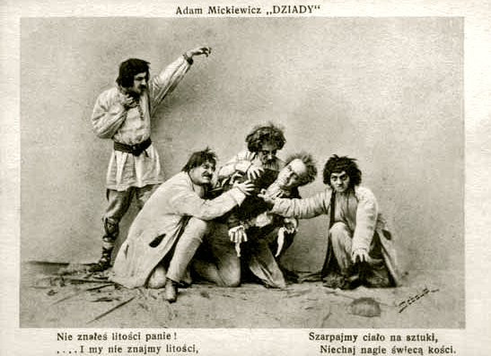

Serce ustało, pierś już lodowata,
Ścięły się usta i oczy zawarły;
Na świecie jeszcze, lecz już nie dla świata!
Cóż to za człowiek? — Umarły.
, duch nadziei życie mu nadaje,
Gwiazda pamięci promyków użycza,
Umarły wraca na młodości kraje
Szukać lubego oblicza.
Pierś znowu tchnęła, lecz pierś lodowata,
Usta i oczy stanęły otworem,
Na świecie znowu, ale nie dla świata;
Czymże ten człowiek? — Upiorem.
Ci, którzy bliżej cmentarza mieszkali, Wiedzą, iż upiór ten co rok się budzi, Na dzień zaduszny mogiłę odwali I dąży pomiędzy ludzi.
